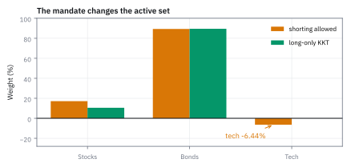
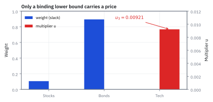
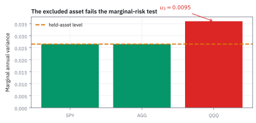

8.6 Karush-Kuhn-Tucker (KKT) Conditions — Inequality Constraints
ดูว่าข้อจำกัดข้อใดกำลังบังคับคำตอบ
กองทุน long-only ถือหุ้นไทย (ผันผวน 20%) พันธบัตร (10%) และหุ้นเทค (35% correlation กับหุ้นไทย 0.65) อยากได้ความเสี่ยงต่ำสุด แต่สูตรสั่งชอร์ตหุ้นเทค 6.44% ซึ่ง mandate ห้าม ควรถือเท่าไร และกฎห้ามชอร์ตแพงแค่ไหน?
เฉลย: หุ้นไทย 10.53% พันธบัตร 89.47% หุ้นเทค 0% ความเสี่ยง 9.787% เทียบกับ 9.634% ถ้าชอร์ตได้ กฎนี้แพง 15.3 bp ต่อปี ราคาเงาของกฎ u₃ = 0.00921 บอกว่าผ่อนให้ชอร์ตหุ้นเทคได้ 1% จะปลดงบความเสี่ยงราว \$2.17 ล้านบนพอร์ต 5,000 ล้าน
Karush-Kuhn-Tucker (KKT) conditions รวม gradient, inequality constraint และ multiplier เพื่อบอกว่า constraint ใดกำลังทำงาน และแต่ละข้อมีราคาเท่าไร
ศัพท์ที่ใช้ในหัวข้อนี้
- Karush-Kuhn-Tucker (KKT) conditions
- เงื่อนไขสี่ชุดสำหรับ optimum ที่มี inequality constraints ใช้ตรวจ primal, multipliers, stationarity และการชนขอบ
- stationarity
- เงื่อนไขที่ gradient ของ Lagrangian เป็นศูนย์ ใช้เชื่อมน้ำหนักกับตัวคูณทุกตัว
- primal feasibility
- เงื่อนไขที่คำตอบต้องทำตามข้อจำกัดทุกข้อ ใช้คัดคำตอบที่ฝ่าฝืน mandate ทิ้ง
- dual feasibility
- เงื่อนไขเครื่องหมายของ inequality multipliers ใช้ทำให้ราคาของการฝ่าฝืนชี้ทิศถูก
- complementary slackness
- กฎที่ multiplier คูณ residual ต้องเป็นศูนย์ ใช้บังคับให้ constraint มีราคาได้เฉพาะตอนชนขอบ
- active constraint
- constraint ที่ residual เท่าศูนย์ ณ คำตอบ ใช้ระบุขอบที่กำลังจำกัดการปรับพอร์ต
- inactive constraint
- constraint ที่ยังมี slack เหลือ ณ คำตอบ ใช้บอกว่าการผ่อน limit นั้นไม่มี local value
- active set
- ชุดของข้อจำกัดที่ชนขอบพอดี ณ คำตอบ ใช้เดาแล้วสอบเพื่อหาคำตอบของโจทย์ที่มีอสมการ
- mandate
- กติกาการลงทุนที่ผู้ถือหน่วยกำหนดให้กองทุน เช่นห้ามชอร์ต ใช้เป็นข้อจำกัดอสมการของ optimizer
- long-only
- ข้อกำหนดที่ portfolio weights ห้ามติดลบ ใช้ป้องกัน short positions ตาม mandate
- short position
- สถานะที่ได้ประโยชน์เมื่อราคาสินทรัพย์ลดลง ใช้สร้างน้ำหนักติดลบหรือ hedge แต่บาง mandates ห้ามใช้
- hedge
- position ที่ออกแบบให้หักล้างความเสี่ยงของ position อื่น ใช้ลด exposure ที่พอร์ตไม่ต้องการ
- basis point (bp)
- หนึ่งในร้อยของหนึ่งเปอร์เซ็นต์ คือ 0.01% ใช้บอกความต่างเล็ก ๆ ของผลตอบแทนหรือความเสี่ยง
สัญลักษณ์ที่ใช้ในหัวข้อนี้
| สัญลักษณ์ | ความหมาย | หน่วย |
|---|---|---|
| $x$ | น้ำหนักหุ้นไทย พันธบัตร หุ้นเทค | fraction of net asset value |
| $V$ | annual covariance matrix 3×3 | (decimal return)² ต่อปี |
| $g_i(x)=-x_i$ | long-only residual ของสินทรัพย์ $i$ เขียนให้เป็นรูปไม่เกินศูนย์ | fraction of net asset value |
| $\nu$ | multiplier ของ budget equality บวกหรือลบก็ได้ | annual variance ต่อหนึ่งหน่วยน้ำหนัก |
| $u_i$ | multiplier ของ long-only residual ต้องไม่ติดลบ | annual variance ต่อหนึ่งหน่วยน้ำหนัก |
| $(Vx)_i$ | marginal risk ของสินทรัพย์ $i$ ในพอร์ตปัจจุบัน | annual variance ต่อหนึ่งหน่วยน้ำหนัก |
ที่มาที่ไป: วิทยานิพนธ์ที่ไม่มีใครอ่าน จนต้องมีคนคิดใหม่อีกสิบสองปี
William Karush เขียนเงื่อนไขชุดนี้ไว้ในวิทยานิพนธ์ปริญญาโทเมื่อปี 1939 แต่ไม่ได้ตีพิมพ์ งานของเขาจึงไม่มีใครรู้จัก
ในปี 1951 Harold Kuhn และ Albert Tucker คิดเงื่อนไขชุดเดียวกันขึ้นมาใหม่โดยไม่รู้ว่ามีคนทำไว้แล้ว และตีพิมพ์ ต่อมาเมื่อมีคนพบงานของ Karush ชื่อของเขาจึงถูกเพิ่มเข้าไป
ปัญหาที่เงื่อนไขชุดนี้แก้คือ ข้อจำกัดจริงส่วนใหญ่ไม่ใช่สมการแต่เป็นอสมการ เช่นห้ามถือติดลบ ซึ่งวิธีของ Lagrange แบบเดิมจัดการไม่ได้
ความยากอยู่ที่ข้อจำกัดแบบนี้อาจกำลังบีบคำตอบอยู่ หรืออาจยังเหลือที่ว่างและไม่มีผลอะไรเลย และเราไม่รู้ล่วงหน้าว่าข้อไหนเป็นแบบไหน ประโยคเดียวที่สรุปได้คือของที่เหลือใช้ย่อมไม่มีราคา มีวงเงิน 100 ล้านแต่ใช้ 40 ล้าน วงเงินที่เหลือไม่มีมูลค่าส่วนเพิ่ม ใช้ครบแล้วยังอยากได้อีก วงเงินจึงมีราคา
โจทย์: พอร์ตความเสี่ยงต่ำสุดสามสินทรัพย์ ห้ามชอร์ต
โจทย์ให้อะไรมาบ้าง: หุ้นไทย σ₁ = 20% พันธบัตร σ₂ = 10% หุ้นเทค σ₃ = 35% correlation หุ้นไทยกับพันธบัตร 0.30 หุ้นไทยกับหุ้นเทค 0.65 พันธบัตรกับหุ้นเทค 0.30 ต้องลงเงินครบ 100% และห้ามชอร์ตทั้งสามตัว เป้าหมายคือความเสี่ยงต่ำสุดล้วน ๆ ผลตอบแทนคาดหวังจึงยังไม่เข้าสมการ จนถึงขั้นที่ 12
correlation 0.65 ระหว่างหุ้นไทยกับหุ้นเทคคือตัวการของทั้งข้อ ตัวเลขเป็นสมมติฐานสอน ไม่ใช่ covariance ที่ประมาณจากตลาดจริง
ขั้นที่ 1 — เขียนโจทย์ให้เป็นรูปมาตรฐาน แล้วสร้าง Lagrangian
รูปมาตรฐานของ KKT บังคับสามอย่าง เป็นปัญหาหาค่าต่ำสุด อสมการเขียนเป็น g(x) ≤ 0 และสมการเขียนเป็น h(x) = 0 ข้อ x ≥ 0 จึงต้องคูณ −1 กลับด้าน
ทุกข้อจำกัดได้ตัวคูณของตัวเอง ν สำหรับงบ u₁, u₂, u₃ สำหรับห้ามชอร์ต ต้องแปลงเครื่องหมายเพราะเงื่อนไขว่า u ไม่ติดลบจะถูกก็ต่อเมื่อเขียน g ≤ 0 ในปัญหาหาค่าต่ำสุด ถ้าใส่ตัวคูณให้ x ≥ 0 ตรง ๆ เครื่องหมายของ u จะกลับ แล้วสรุปผิดว่าข้อจำกัดไหนกำลังบีบ
เคล็ดจำ: หาค่าต่ำสุด g ไม่เกินศูนย์ และ u ไม่ติดลบ ไปด้วยกันเสมอ เปลี่ยนอันหนึ่ง ต้องกลับเครื่องหมายอีกสองอัน objective เป็นชามเพราะ V positive definite และข้อจำกัดเป็นเส้นตรงทั้งหมด จุดที่ผ่าน KKT ครบจึงเป็นคำตอบที่ดีที่สุดของทั้งโจทย์
ขั้นที่ 2 — KKT checklist สี่ข้อ
เงื่อนไขที่คำตอบต้องผ่านมีสี่ข้อ ไม่ใช่ข้อเดียวเหมือนกรณีสมการ ขั้นนี้เขียนให้ครบก่อนลงมือ
ทุกบรรทัดต้องผ่านพร้อมกัน complementarity บอกว่าน้ำหนักบวกทำให้ตัวคูณเป็นศูนย์ ส่วนตัวคูณบวกบังคับให้น้ำหนักชนศูนย์ ต้องมีอย่างน้อยหนึ่งตัวในคู่ที่เป็นศูนย์ ν ไม่อยู่ในบรรทัด dual เพราะมาจากสมการ จึงติดลบได้
ขั้นที่ 3 — ที่มาทางเรขาคณิตของ KKT และเครื่องหมายของตัวคูณ
แยกพิจารณาว่าคำตอบอยู่ภายในหรือชนขอบของข้อจำกัดแต่ละข้อ แล้วดูว่าทิศที่เดินได้บังคับอะไรกับ gradient
ถ้าสินทรัพย์มีน้ำหนักบวก ขอบศูนย์อยู่ห่างออกไป ข้อจำกัดไม่มีผลต่อการตัดสินใจ แรงต้าน u ต้องเป็นศูนย์ ถ้าชนขอบศูนย์ เดินได้เฉพาะทิศที่ไม่ทำให้น้ำหนักติดลบ
ที่จุดต่ำสุด ทุกทิศที่เดินได้ต้องไม่ทำให้ objective ลดลง gradient จึงต้องชี้ออกจากขอบด้วยขนาดที่ไม่ติดลบ นี่คือที่มาของเครื่องหมาย u ไม่ติดลบ และของกฎว่า u คูณ g ต้องเป็นศูนย์
ขั้นที่ 4 — สร้าง covariance matrix ครบ 9 ช่อง
ช่องทแยงคือ σᵢ² ช่องนอกทแยงคือ ρᵢⱼσᵢσⱼ ตามหัวข้อ 6.7
V₁₃ = 0.0455 ใหญ่กว่า V₁₂ = 0.0060 ถึง 7.6 เท่า หุ้นเทคกับหุ้นไทยล้มพร้อมกันแรงมาก นี่คือเหตุผลที่สูตรจะอยากชอร์ตหุ้นเทคเพื่อเอามาหักล้างหุ้นไทย
ขั้นที่ 5 — stationarity เขียนเป็นเครื่องมือหลัก: u = 2Vx + ν1
หา derivative ของ Lagrangian ทีละก้อนตามหัวข้อ 8.2 แล้วย้ายข้างให้ u อยู่เดี่ยว
(Vx)ᵢ คือ marginal risk ของสินทรัพย์ i จากหัวข้อ 8.2 สมการเดียวนี้ใช้ทำงานทั้งข้อ ถ้าเดาได้ว่าสินทรัพย์ไหนโดนบังคับให้เป็นศูนย์ ก็แก้หา x ได้ แล้วคำนวณ u ย้อนกลับออกมาเป็นตัวเลขจริงเพื่อสอบ
ต่างจากหัวข้อ 8.4 ที่มีตัวคูณตัวเดียวและไม่ต้องสอบอะไร เพราะข้อจำกัดเป็นสมการที่ต้องจริงเสมอ พอมีอสมการ เราต้องเดาก่อนแล้วค่อยสอบ
ขั้นที่ 6 — ลองแบบไม่มีกฎห้ามชอร์ต: สูตรสั่งชอร์ตหุ้นเทค
ตัดข้อจำกัด x ≥ 0 ทิ้ง u จึงเป็นศูนย์ทั้งสามตัว เหลือพอร์ต variance ต่ำสุดของหัวข้อ 8.5 กับ V สามตัว
สูตรอยากชอร์ตหุ้นเทค 6.44% ทั้งที่มันผันผวนที่สุด เพราะ correlation 0.65 สูงมาก ขาชอร์ตหุ้นเทคทำหน้าที่เป็นประกันให้หุ้นไทย เวลาหุ้นไทยลง หุ้นเทคมักลงด้วย ขาชอร์ตจึงได้กำไรมาหักล้าง
ในโลกคณิตศาสตร์นี่คือคำตอบที่ถูก แต่ mandate ส่วนใหญ่ห้ามชอร์ต คำตอบที่ดีที่สุดทางคณิตศาสตร์กับคำตอบที่ทำได้จริงเป็นคนละจุด นี่คือเหตุผลที่ต้องมี KKT
ขั้นถัดไปต้องการตารางนี้: ไล่ active set ครบ 7 กรณี
| บังคับให้เป็นศูนย์ | x ที่ได้ | ผลสอบ |
|---|---|---|
| ไม่บังคับเลย | (0.1714, 0.8930, −0.0644) | x₃ ติดลบ ตก primal |
| x₁ = 0 | (0, 1.0045, −0.0045) | x₃ ติดลบ ตก primal |
| x₂ = 0 | (1.0769, 0, −0.0769) | x₃ ติดลบ ตก primal |
| x₃ = 0 | (0.1053, 0.8947, 0) | ผ่านทั้งสองด่าน |
| x₁ = x₂ = 0 | (0, 0, 1) | u₁ = −0.154 ตก dual |
| x₁ = x₃ = 0 | (0, 1, 0) | u₁ = −0.008 ตก dual |
| x₂ = x₃ = 0 | (1, 0, 0) | u₂ = −0.068 ตก dual |
สามสินทรัพย์ แต่ละตัวเป็นศูนย์หรือไม่ ได้ 2³ = 8 กรณี ตัดกรณีศูนย์ทั้งหมดทิ้งเพราะขัดกับงบ เหลือ 7 แต่ละกรณีบังคับตัวที่เดาให้เป็นศูนย์ แก้ variance ต่ำสุดด้วยตัวที่เหลือ แล้วคำนวณ u ด้วยสูตรของขั้นที่ 5 รอดกรณีเดียว เพราะ objective เป็นชามและข้อจำกัดเป็นเส้นตรง คำตอบจึงมีจุดเดียว
ขั้นที่ 7 — ทำไมตกสองแบบ: เดาน้อยไปกับเดามากไป
ดูตัวอย่างกรณีที่ตก dual ด้วยสูตรของขั้นที่ 5 กรณีถือพันธบัตรล้วน (0, 1, 0)
สามกรณีแรกตก primal เพราะเดาน้อยไป ปล่อยให้ตัวที่ควรถูกล็อกวิ่งไปติดลบ สามกรณีท้ายตก dual เพราะเดามากไป ล็อกตัวที่ไม่ควรล็อก u₁ = −0.008 แปลว่าถ้าปล่อยให้หุ้นไทยมีน้ำหนัก ความเสี่ยงจะลดลง การบังคับให้เป็นศูนย์กำลังทำร้ายพอร์ต
ซอฟต์แวร์จริงใช้ algorithm active-set ที่เดินฉลาดกว่านี้ ไม่ได้ไล่ครบทุกกรณี เพราะกับหุ้น 500 ตัว จำนวนกรณีมากกว่าจำนวนอะตอมในจักรวาล
ขั้นที่ 8 — แก้กรณีที่รอด: บังคับ x₃ = 0 เหลือโจทย์สองสินทรัพย์
ตัดแถวและหลักที่ 3 ทิ้ง เหลือ V 2×2 ตัวเดิมของหัวข้อ 8.5 แล้วใช้สูตรปิดของพอร์ตความเสี่ยงต่ำสุดสองตัวจากหัวข้อ 8.2
นี่คือพอร์ต variance ต่ำสุดของสองสินทรัพย์ในหัวข้อ 8.5 เป๊ะ ไม่ใช่เรื่องบังเอิญ เมื่อ KKT ตัดสินว่าหุ้นเทคต้องเป็นศูนย์ ปัญหาที่เหลือก็คือปัญหาเดิมทุกตัวอักษร เมื่อไม่มีอสมการที่ชนขอบ KKT ลดรูปเป็นวิธี Lagrange
กฎห้ามชอร์ตทำให้ความเสี่ยงขึ้นจาก 9.634% เป็น 9.787% แพงขึ้น 15.3 bp ต่อปี เป็นต้นทุนเชิงความเสี่ยงของ mandate ภายใต้ covariance ชุดนี้
ขั้นที่ 9 — marginal risk ทุกสินทรัพย์ที่พอร์ตใหม่
คูณ V กับน้ำหนักใหม่ทีละแถว หุ้นเทคมีน้ำหนักศูนย์ พจน์ที่สามจึงหายไปทุกแถว
สองตัวแรกเท่ากันเป๊ะและเท่ากับ σ² คือลายเซ็นของพอร์ต variance ต่ำสุดจากหัวข้อ 8.2 ตัวที่สามสูงกว่า 48% นั่นแหละคือสาเหตุที่หุ้นเทคถูกเตะออก เพิ่มหุ้นเทคจากศูนย์จะดันความเสี่ยงขึ้น
ขั้นที่ 10 — สอบ KKT ครบสี่หมวด
ใช้ uᵢ = 2(Vx)ᵢ + ν กับ x₁ บวก จึงตั้ง u₁ = 0 เพื่อหา ν แล้วตรวจแถวที่ 2 ต้องได้ ν เดียวกัน และแถวที่ 3 ให้ u₃
สามบรรทัดท้ายคือ primal น้ำหนักไม่ติดลบรวมได้หนึ่ง dual u ไม่ติดลบ และ complementary u คูณ x เป็นศูนย์ทุกคู่
ครบสี่หมวดและ objective เป็นชาม นี่คือคำตอบที่ดีที่สุด ν = −0.019158 ติดลบได้ไม่ผิดกติกา เพราะมาจากสมการ
complementary slackness ผ่านง่ายเสมอถ้าเดา active set ถูก เพราะเราบังคับ x₃ = 0 และ u₁ = u₂ = 0 ไว้แล้ว หมวดที่ทำงานหนักจริงคือ primal กับ dual ซึ่งคัดทิ้ง 6 จาก 7 กรณี
ขั้นที่ 11 — u₃ = 0.00921 คือราคาของกฎห้ามชอร์ต
ผ่อนกฎให้ชอร์ตหุ้นเทคได้ ε variance ควรลดราว u₃ε ทดสอบตรง ๆ ด้วย ε = 0.01 แล้วแปลงเป็นเงิน
ν = −2σ² ในขั้นที่ 10 u₃ จึงเท่ากับสองเท่าของส่วนที่ marginal risk ของหุ้นเทคแพงเกินค่าเฉลี่ยของพอร์ต ยิ่งแพงเกินมาก ยิ่งอยากชอร์ตมาก ยิ่งเจ็บมากเมื่อถูกห้าม ถ้าวันหนึ่ง (Vx)₃ ตกมาเท่ากับ σ² กฎห้ามชอร์ตจะไม่มีต้นทุนเลย
ผ่อนให้ชอร์ต 1% variance ลดจริง 0.00008496 u₃ ทำนาย 0.00009211 สูงไป 8% เพราะเป็น derivative ที่จุดเดียว เหมือนหัวข้อ 8.4
แปลงเป็นภาษากรรมการ ความเสี่ยงลด 4.35 bp บนพอร์ต \$5,000 ล้าน ปลดงบความเสี่ยงได้ \$2.17 ล้านต่อปี จากการชอร์ตแค่ 1% ส่วน −ν = 0.019158 บอกว่าเพิ่มการลงทุนเป็น 101% variance จะเพิ่มราว 0.00019
ขั้นที่ 12 — ข้อจำกัดชนขอบหรือไม่ขึ้นกับเป้าหมาย: ใส่ผลตอบแทนเข้าไป
เปลี่ยนเป้าหมายเป็น mean-variance ของหัวข้อ 8.5 ด้วย μ = (12%, 6%, 15%) และ γ = 2 stationarity กลายเป็น u = 2γVx − μ + ν1 เอาคำตอบแบบ (0.5, 0.5, 0) มาสอบ
u₃ ติดลบ ตก dual แปลว่าปล่อยให้หุ้นเทคมีน้ำหนักเถอะ ค่าเป้าหมายจะดีขึ้น แก้ใหม่โดยไม่บังคับได้น้ำหนักบวกทั้งสามตัว กฎห้ามชอร์ตไม่ชนขอบเลย u ทั้งหมดเป็นศูนย์ และ KKT ลดรูปกลับเป็นหัวข้อ 8.5
ข้อมูลเดียวกัน ข้อจำกัดเดียวกัน แต่ active set คนละชุด เป้าหมายแรกสนใจแค่ความเสี่ยง หุ้นเทคดังเกินไปจึงถูกเตะออก เป้าหมายที่สองให้เครดิตกับผลตอบแทน 15% ของหุ้นเทค จึงคุ้มที่จะถือ 3.5% อย่าถามว่าข้อจำกัดนี้ชนขอบไหมลอย ๆ ต้องถามว่าภายใต้เป้าหมายไหน
แล้วเอาไปใช้ทำอะไรได้จริงบ้าง
ทุกกองทุนมี mandate ที่เต็มไปด้วยข้อจำกัดอสมการ ห้ามชอร์ต ถือหุ้นตัวเดียวไม่เกิน 10% ถือเงินสดไม่ต่ำกว่า 5% ค่า u ที่ตัวแก้ปัญหาพ่นออกมาพร้อมน้ำหนักคือใบเสร็จค่ากฎแต่ละข้อ
ข้อไหน u เป็นศูนย์แปลว่าเขียนไว้เฉย ๆ ไม่ได้กัดอะไร ข้อไหน u ใหญ่คือข้อที่ควรเอาไปเถียงกับคณะกรรมการก่อน เพราะมีตัวเลขรองรับว่าแลกมาเป็นความเสี่ยงหรือผลตอบแทนเท่าไร
KKT คือจุดที่ทุกอย่างในบทนี้กับบทที่ 5 มาบรรจบกัน เมื่อทุกอย่างเป็นเส้นตรง มันคือทฤษฎีคู่ควบของ linear programming ในหัวข้อ 5.3 เมื่อไม่มีอสมการเลย มันคือ Lagrange ในหัวข้อ 8.4
Figure 8.6a — น้ำหนักแบบไม่มีเงื่อนไข เทียบกับแบบ long-only

คำตอบที่ชอร์ตได้ใช้หุ้นเทคติดลบ 6.44% จึงออกนอก mandate คำตอบ KKT วางหุ้นเทคที่ศูนย์แล้วแบ่งหุ้นไทยกับพันธบัตรใหม่เป็น 10.53/89.47 ไม่ได้ใช้วิธีตัดแล้วปรับสัดส่วนแบบลัด
Figure 8.6b — เงื่อนไขที่ติด กับเงื่อนไขที่ไม่ติด

หุ้นไทยกับพันธบัตรมีน้ำหนักบวกและตัวคูณศูนย์ ส่วนหุ้นเทคมีน้ำหนักศูนย์และตัวคูณ 0.00921 complementary slackness จับคู่ได้พอดี
Figure 8.6c — เกณฑ์ variance ส่วนเพิ่ม

marginal variance ของหุ้นเทคหลังคูณสองอยู่สูงกว่าระดับของสินทรัพย์ที่ถืออยู่ 0.00921 ช่องว่างนี้คือตัวคูณของขอบล่าง
Figure 8.6d — ต้นทุน variance ที่จ่ายให้ข้อบังคับของกอง

variance ต่ำสุดแบบ long-only สูงกว่าแบบชอร์ตได้ เพราะพื้นที่ที่เลือกได้เล็กลง ส่วนต่าง 9.634% กับ 9.787% คือ 15.3 bp ของความเสี่ยงต่อปี
คำตอบ — long-only บังคับหุ้นเทคลงที่ศูนย์
คำถาม: พอร์ตความเสี่ยงต่ำสุดที่ห้ามชอร์ตคืออะไร และกฎห้ามชอร์ตแพงแค่ไหน?
ของที่มี: ขั้นที่ 4 ถึง 12
1. ถ้าชอร์ตได้ ได้ (0.1714, 0.8930, −0.0644) σ = 9.634% แต่ผิด mandate
2. จาก 7 กรณีของ active set รอดกรณีเดียว x₃ = 0 ชนขอบ ได้ (0.1053, 0.8947, 0) σ = 9.787% ต้นทุนของกฎ 15.3 bp ต่อปี
3. KKT ครบสี่หมวด ν = −0.019158 u = (0, 0, 0.00921) น้ำหนักไม่ติดลบรวมได้หนึ่ง u ไม่ติดลบ และ uᵢxᵢ = 0 ทุกคู่
ตรวจเองใน 10 วินาที: 2(0.014184) − 2(0.009579) = 0.00921 และ 0.00921 × 0 = 0
แปลว่าอะไร: u₃ คือราคาเงาของกฎห้ามชอร์ต ผ่อนให้ชอร์ตหุ้นเทคได้ 1% ลดความเสี่ยง 4.35 bp หรือ \$2.17 ล้านของงบความเสี่ยงบนพอร์ต 5,000 ล้าน u เป็น derivative ที่จุดปัจจุบัน ใช้ทำนายการผ่อนกฎเล็กน้อยเท่านั้น ถ้าจะขอผ่อนให้ชอร์ตได้ 30% ต้องแก้ใหม่ทั้งข้อ เพราะ active set อาจเปลี่ยนไปเลย
โค้ดตรวจ KKT ของพอร์ตห้ามชอร์ต
import numpy as np
from scipy.optimize import minimize
s=np.array([.2,.1,.35]); R=np.array([[1,.3,.65],[.3,1,.3],[.65,.3,1]]); V=np.outer(s,s)*R
one=np.ones(3); Vi=np.linalg.inv(V); A=one@Vi@one
assert abs(A-107.7329)<1e-4 and np.allclose(Vi@one/A,[0.171392,0.893041,-0.064433],atol=1e-6)
c=[{'type':'eq','fun':lambda z: z.sum()-1}]
r=minimize(lambda z: z@V@z,[.3,.6,.1],bounds=[(0,None)]*3,constraints=c,tol=1e-14)
assert np.allclose(r.x,[2/19,17/19,0],atol=1e-6) and abs(np.sqrt(r.fun)-0.097872)<1e-6
x=np.array([2/19,17/19,0]); nu=-2*(V@x)[0]; u=2*V@x+nu
assert abs(nu+0.01915789)<1e-8 and np.allclose(u,[0,0,0.00921053],atol=1e-8)
r2=minimize(lambda z: z@V@z,[.3,.6,.1],bounds=[(0,None),(0,None),(-0.01,None)],constraints=c,tol=1e-14)
assert abs(r2.fun-0.00949399)<1e-8 and abs(5000*(np.sqrt(r.fun)-np.sqrt(r2.fun))-2.17)<0.01
mu=np.array([.12,.06,.15]); B=one@Vi@mu; xm=Vi@(mu-(B-4)/A*one)/4
assert np.allclose(xm,[0.4641,0.5009,0.0350],atol=1e-4)โค้ดนี้ตรวจคำตอบที่ชอร์ตได้ ให้ optimizer มาตรฐานแก้แบบห้ามชอร์ตต้องได้ 2/19 กับ 17/19 และ 9.787% คำนวณ ν กับ u ด้วยสูตรของขั้นที่ 5 ผ่อนให้ชอร์ต 1% ต้องได้ 0.00949399 และ 2.17 ล้าน และเป้าหมาย mean-variance ต้องให้น้ำหนักบวกทั้งสามตัว
กับดัก: ตรวจแค่ว่าน้ำหนักไม่ติดลบและรวมได้หนึ่ง
สามกรณีท้ายของตาราง active set มีน้ำหนักไม่ติดลบและรวมได้หนึ่งพอดี แต่ตก dual ทั้งหมด ถ้าเช็กแค่นั้นคุณจะยอมรับพอร์ตที่แย่กว่าคำตอบจริงได้ถึง 12.8 เท่าในแง่ variance กรณีถือหุ้นเทคล้วน 0.1225 เทียบกับ 0.009579 และห้ามตัดน้ำหนักที่ติดลบทิ้งแล้วปรับสัดส่วนใหม่เอง ต้องแก้ active set และตรวจตัวคูณใหม่
ตัวคูณที่ต้องไม่ติดลบมีเฉพาะของอสมการ ตัวคูณของสมการอย่าง ν = −0.019158 ติดลบได้ตามปกติ อย่ากลับเครื่องหมายเอง และถ้าเปลี่ยนทิศอสมการ ต้องเปลี่ยนเครื่องหมายตัวคูณให้สอดคล้อง
ข้อจำกัด: วิธีนี้สมมติอะไร และของจริงเป็นอย่างไร
| เรื่อง | วิธีนี้สมมติว่า | ของจริงเป็นอย่างไร | ผลที่ตามมาเวลาใช้งาน |
|---|---|---|---|
| จำนวนกรณี | ลองทุกชุดของกฎที่ตึงได้ | จำนวนชุดโตแบบทวีคูณตามจำนวนกฎ | ปัญหาที่มีกฎเยอะต้องใช้ตัวแก้ปัญหาเฉพาะทาง ไม่ใช่ไล่ลองด้วยมือ |
| convexity | ปัญหาเป็นรูปชามใบเดียว | จริงสำหรับการจัดพอร์ตมาตรฐาน แต่ไม่จริงเมื่อเพิ่มต้นทุนบางแบบ | ถ้าไม่ใช่รูปชาม เงื่อนไขที่ตรวจได้ก็เป็นแค่เงื่อนไขจำเป็น ไม่รับประกันว่าดีที่สุด |
| ความเสถียร | คำตอบนิ่ง | กฎที่ตึงพอดีทำให้คำตอบกระโดดเมื่อ input ขยับนิดเดียว | น้ำหนักที่แนะนำอาจเปลี่ยนไปมาระหว่างวันโดยที่ตลาดแทบไม่ขยับ |
แถวล่างเป็นปัญหาจริงในการนำไปใช้ และมักแก้ด้วยการเพิ่มต้นทุนการซื้อขายเข้าไปในโจทย์ ซึ่งเป็นเรื่องของหัวข้อ 8.8
สรุปที่ใช้ได้จริง
- KKT มัดเงื่อนไขสี่ข้อไว้ด้วยกัน: stationarity, primal feasibility, dual feasibility และ complementary slackness
- active constraint มี residual ศูนย์และอาจมี multiplier บวก ส่วน inactive constraint ต้องมี multiplier ศูนย์
- หุ้นไทย/พันธบัตร/หุ้นเทค ห้ามชอร์ต ได้ 10.53/89.47/0 ที่ 9.787% กฎห้ามชอร์ตแพง 15.3 bp และ u₃ = 0.00921 ตีเป็นเงินได้ 2.17 ล้านต่อการผ่อน 1%
- ห้าม clip แล้ว normalize ต้องแก้ active set และตรวจ multipliers ใหม่ และข้อจำกัดจะชนขอบหรือไม่ขึ้นกับเป้าหมาย